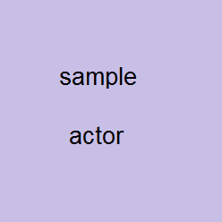
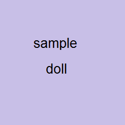

Remote mocap: connect, direct, collect.
The fastest service on the market, now in real time.
Remote mocap
Prepare a list of custom motions that you need and we'll stream the mocap data into your computer live. You can direct the actor in real time to capture that perfect performance you need.
PROs: you are still in control of the shoot via Skype or similar means. This is the most budget-friendly way of figuring out your ideas.
On-site mocap
At your location: studio, set, office, football field, ski slope - you name it!
PROs: you can direct the session, you can use your own actors and we can show you in real time what the actor does, retargeted to your 3D character.
Live event real time streaming
Not every technology works well in variable lighing conditions and exposed to the elements. We can come to your set or venue and make your live event as interesting as it ever gets. Ask us for an online demo!
Retargeting!
We can lend a hand with retargeting the motions to your characters.